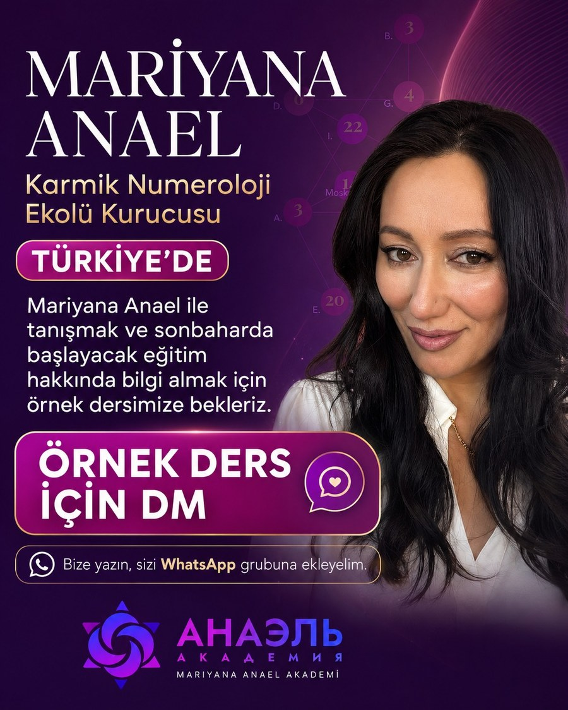
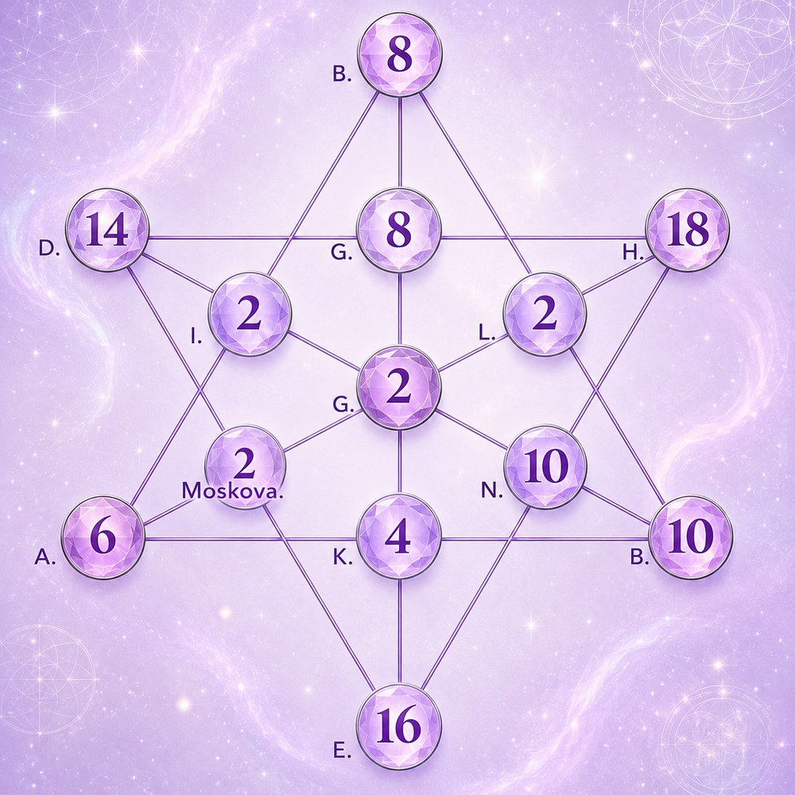

Mariyana Anael
Karmik Numeroloji Eğitimi
Anael Karmik Numeroloji hesaplama sistemi ile arkanaların ve arketiplerin özel anlamları, karmik görevler, başarı anahtarları ve tekrarlayan yaşam senaryolarını okuma eğitimi.
Eğitmen
Eğitmeniniz

Mariyana Anael
Anael Karmik Numeroloji Metodu'nun kurucusudur. Psikolog ve filozoftur, PhD doktora derecesine sahiptir. 2021-2022 yıllarında Rusya'nın en iyi dijital psikoloğu seçilmiştir. İntegratif Psikoloji ve Felsefe Enstitüsü'nün kurucusudur; 40.000'den fazla öğrenci yetiştirmiştir, 8 kitabın yazarı ve 32 ödülün sahibidir.
Program Bilgileri
Süre ve Detaylar
| Süre | Belirtilmemiş |
|---|---|
| Kayıt Süresi | Ders kayıtları Telegram üzerinden 6 ay süre ile izlenebilir. Kayıt edilemez. |
| PDF ve Notlar | PDF ve notlar paylaşılır |
| Destek | WhatsApp destek grubu aktif |
İçerik
Konu Başlıkları
- Anael Karmik Numeroloji hesaplama sistemi
- Arkanaların ve arketiplerin sisteme özel anlamları
- Karmik görevler
- Başarı anahtarları
- Tekrarlayan yaşam senaryoları
- Olay kodları ve öngörü yöntemleri
- İlişki uyumu
- Profesyonel danışmanlık teknikleri
Örnek
Karmik Numeroloji Yıldızı
Doğum tarihinden türetilen sayıların altı köşeli yıldız üzerindeki yerleşimiyle karmik düğümler ve yaşam kodları bu şekilde okunur.

Bu Eğitime Katılmak İster misin?
Kontenjan, tarih ve kayıt koşulları hakkında bilgi almak için bize ulaş.
WhatsApp ile Yaz